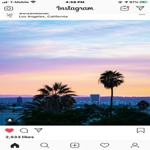
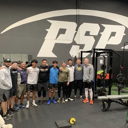
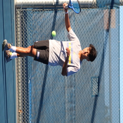
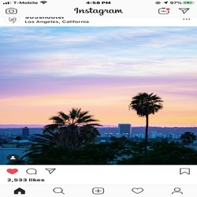
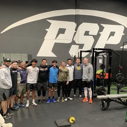
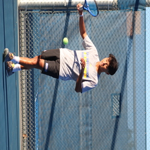

Michael Blando
My name is Michael Blando and I am a Pre-Business student at the University of California, Riverside. While I am attending the University I also play tennis for the school. I have a twin brother that also attends and plays for Riverside. I grew up in San Diego, California and lived there for my whole life before college. My main goal while attending college is to get a business degree in either marketing or management and later on start my own business. Other than playing tennis all the time, some of my hobbies are going to the beach with my friends and playing video games. My favorite video games to play with my friends are Overwatch, Fortnite, CS:GO, and Minecraft. A little about what type of person I am is that I am a little introverted. Back in high school I didn't have that many friends and only liked the people whom I still keep in contact with today. Throughout high school, I did not know what I wanted to do in life. The profession I wanted was to be a professional tennis player after college. Although that is still in my mind, academically I always had the idea of studying business wherever I went. A few of my tennis coaches studied business in college and I thought it would be interesting to see if I could be in their position later on in life. I hope to learn how to manage and run a business one day because the idea of working for yourself has always been very intriguing to me for a while now. What I have learned from all the schooling is to never give up. As simple as it is to say, giving up is always the first option for many students when things do not go their way. When I did not pass a class or do to well in something, I always remembered that you can always get back up and try again. I believe my main traits as a person would be the ability to not give up and not be phased by what other people think of me.
.
Experience
Team Manager
• A part of high shool tennis team
• Managed supplying snacks and drinks
• Helped schedule matches
• Helped check in players and get tournaments running
• Handleded the cash register
• Promoted the events on flyers and websites
• Been a volunteer for 5 years
Education
UC Riverside
University of California Riverside
Portfolio






